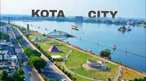

|  | welcome to our websiteKota previously known as Kotah, kota city information a city located in the southeast of northern Indian state of Rajasthan.[7] It is located about 240 kilometres (149 mi) south of the state capital, Jaipur, situated on the banks of Chambal River. With a population of over 1.2 million. Situated on the banks of the Chambal River |
| place | time | gumanpura chopati | open 5 pm |
|---|---|
| mahaveer nagar | open 6 pm |
| sumer | 🌞🌞🌞max 50.c |
| winters | 🌤🌤🌤min 8.c |
| rainy | ☔☔☔max 35.c |